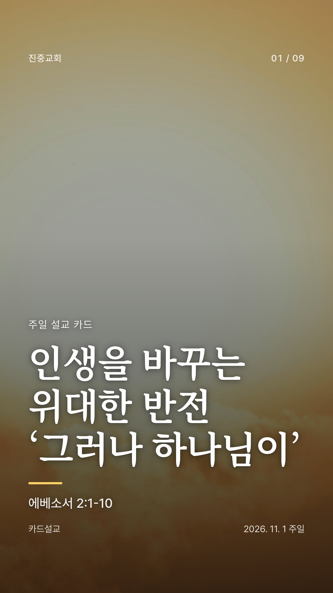
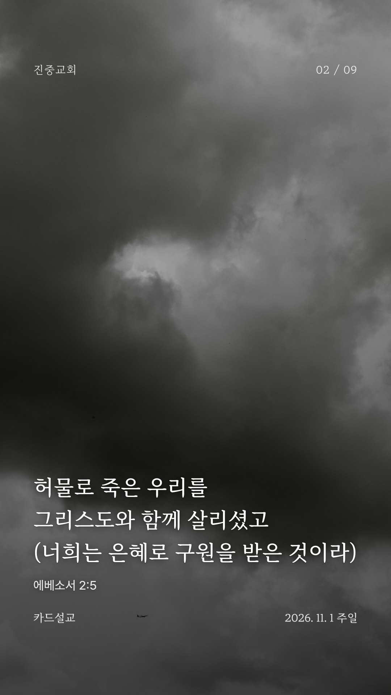
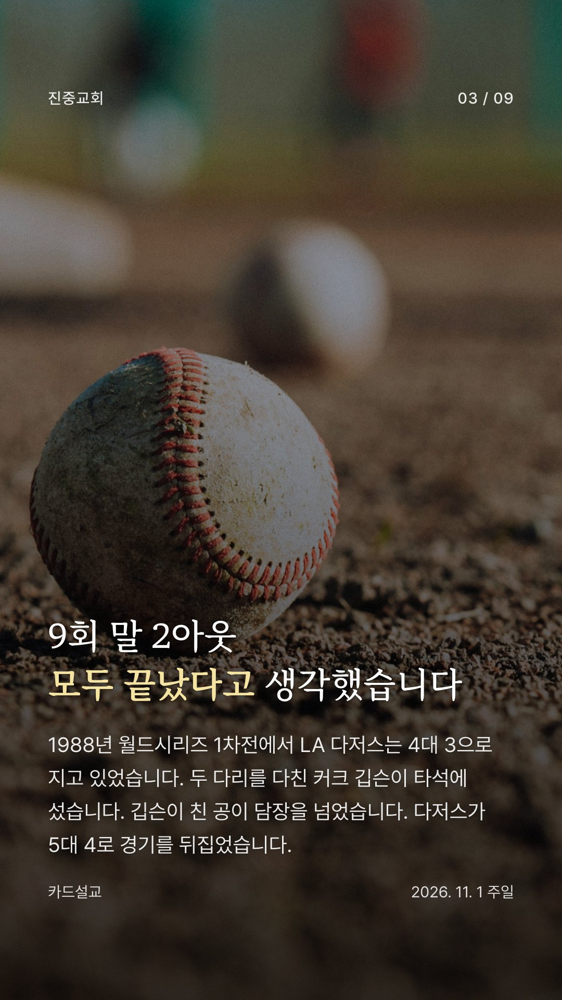
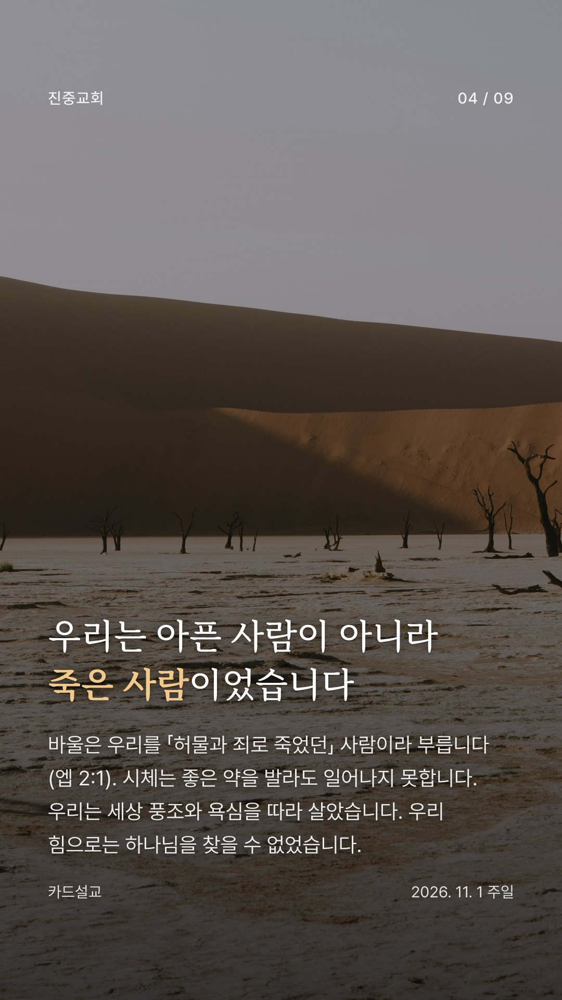
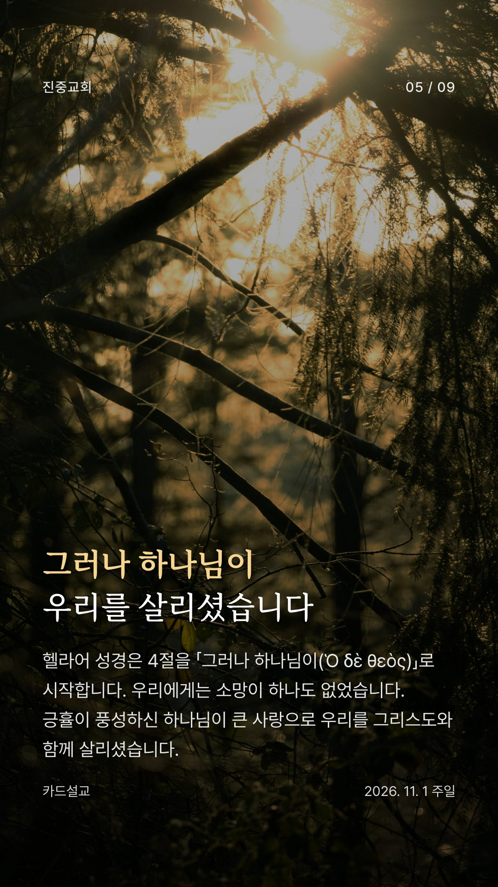
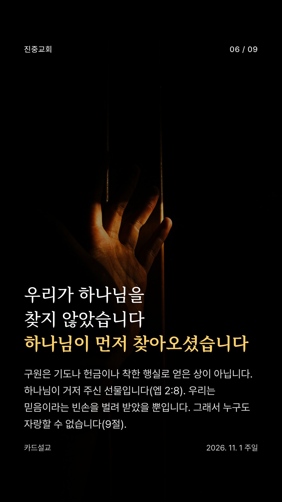
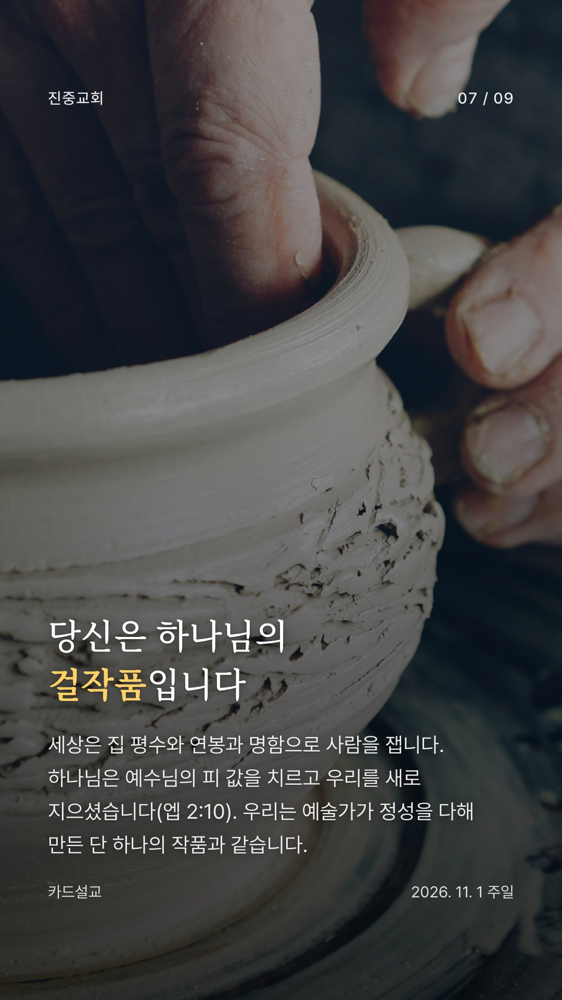
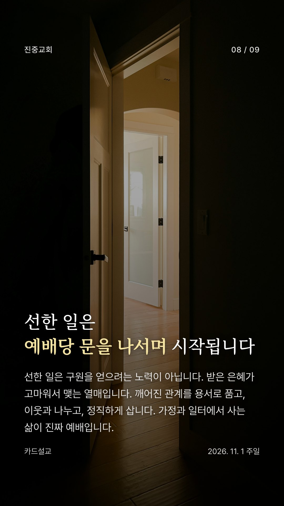
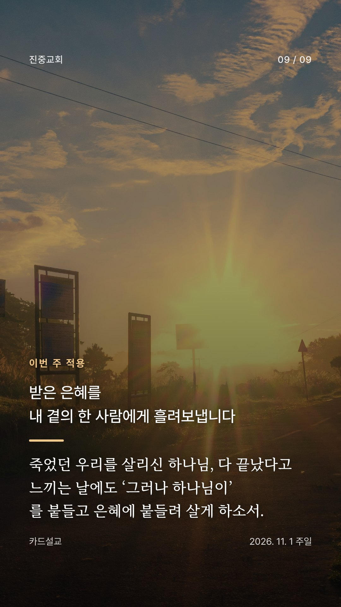

카드를 길게 누르면 저장할 수 있습니다.
사진 1번 Liana S · 2번 Sebastian Schuster · 3번 Mike Bowman · 4번 NIR HIMI · 5번 Greg Rosenke · 6번 M. Rokhman Az-Ziqro N.S. · 7번 Vitaly Gariev · 8번 Greg Rosenke · 9번 Faheem Ahmed / Unsplash